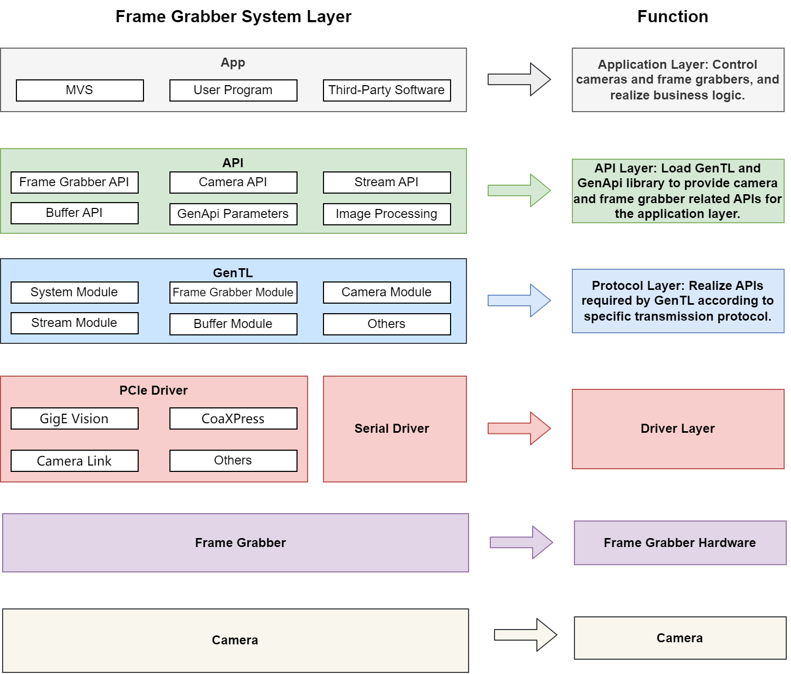

Overview
The Frame Grabber SDK is a software development kit, which provides unified APIs for the access and control of frame grabbers. It simplifies the API calling process, and supports operations of multiple types of frame grabbers at the same time.
Currently, GigE Vision, CoaXPress, Camera Link, and XoFLink frame grabbers are supported. The APIs can be divided into 7 modules, involving version information, frame grabber, camera, image acquisition, image processing, events, and general APIs, providing free space for software design.
Contents
| Update History | Records the main updates of each SDK version. |
| Programming Guide | Introduces the operation process based on C language. |
| API Reference & Data Structure | Introduces the API functions based on C language. |
| Sample Code | Introduces the common samples and the basic operation guide of the APIs. |
| Error Code | Introduces the definition of error code returned by the API functions for debugging when an issue occurs. |
Development Environment
| GigE Vision Frame Grabber |
| Hardware Configuration: PCI-E gen2 × 4 |
| Software Environment: Ubuntu 16.04/18.04/20.04/22.04 x86_64 Operating System |
| CoaXPress Frame Grabber |
| Hardware Configuration: PCI-E gen2 × 8 (CoaXPress-6), PCI-E gen3 × 8 (CoaXPress-12) |
| Software Environment: Ubuntu 16.04/18.04/20.04/22.04 x86_64 Operating System |
| Camera Link Frame Grabber |
| Hardware Configuration: PCI-E gen2 × 4 |
| Software Environment: Ubuntu 16.04/18.04/20.04/22.04 x86_64 Operating System |
| XoFLink Frame Grabber |
| Hardware Configuration: PCI-E gen2 × 8 |
| Software Environment: Ubuntu 16.04/18.04/20.04/22.04 x86_64 Operating System |
Overall Hierarchy Diagram
